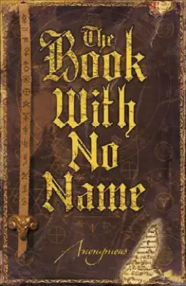
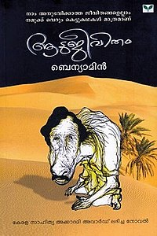

THE BOOK OF NAMES
JILL GREGORY
When a childhood tragedy comes back to haunt Professor David Shepherd, he finds himself in possession of knowledge that holds the world in a delicate balance. He uncovers the Book of Names-an ancient text originating with the biblical Adam, forever.
THE BOOK OF LIFE
DR.JOSEPH MURPHY
The Book of Life is a 2014 American 3D computer-animated musical fantasy comedy film produced by 20th Century Fox Animation and Reel FX Animation Studios, and distributed by 20th Century Fox. Co-written and directed by Jorge R. Gutierrez.
HARRY POTTER

J.K ROWLING
This is the tale of Harry Potter (Daniel Radcliffe), an ordinary eleven-year-old boy serving as a sort of slave for his aunt and uncle who learns that he is actually a wizard and has been invited to attend the Hogwarts School for Witchcraft and Wizardry.
BOOK WITH NO NAME

BHASHEER
Detective Miles Jensen is called to the lawless town of Santa Mondega to investigate a spate of murders. This would all be quite ordinary in those rough streets, except that Jensen is the Chief Detective of Supernatural Investigations
MY NAME IS MEMORY
ANN BRASHARES
Daniel has spent centuries falling in love with the same girl. Life after life, crossing continents and dynasties, he and Sophia (despite her changing name and form) have been drawn together-and he remembers it all.
ROMEO AND JULIET
BHASHEER
MACBETH
BHASHEER
BALYA KAALA SAKHI
BHASHEER
PATHUMMAYUDE AADU
BHASHEER
AADU JEEVITHAM

BENYAMIN